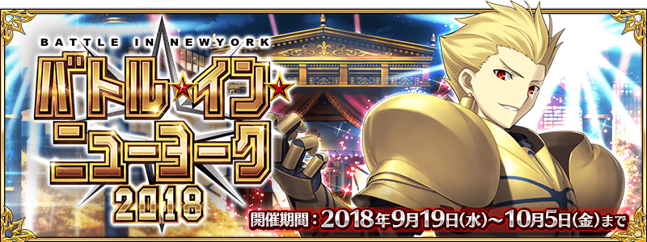
【9月27日(四) 12:00圖片更新】
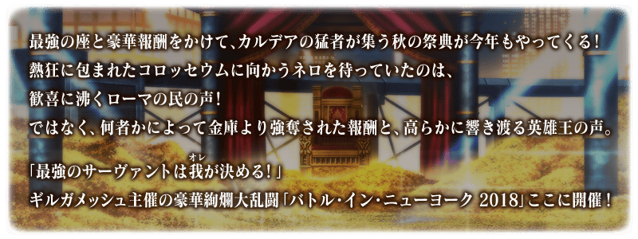
【9月19日(三) 17:00圖片更新】
◆活動舉辦期間◆
2018年9月19日(三) 17:00～10月3日(三)10月5日(五) 11:59
※9/27(四) 12:00修正
◆活動概要◆
舉辦期間限定活動「Battle in New York 2018」！
戰鬥的舞台從羅馬遷移到紐約！
制壓激鬥，以最強寶座為目標吧。
活動期間中，將出現2種活動關卡！
在挑戰與Servant戰鬥的大會關卡能獲得活動専用道具。
收集活動専用道具的話，除了可交換各種報酬外，也可挑戰抽選來收到各式各樣的競賽贈品！
另外，挑戰通過不可續關的超高難易度戰鬥展演關卡的話，可再獲得豪華報酬！
※關於真名尚未判明的Servant，透過主線記錄關卡的進行會讓Servant的名稱變化。
◆活動參加條件◆
只限通過「特異點F 炎上汙染都市 冬木」的Master才能參加
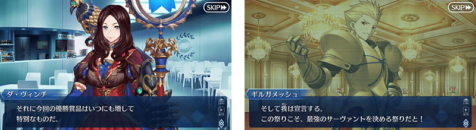
期間限定活動「Battle in New York 2018」中會出現以一定期間變化關卡內容的大會關卡，與逐日各開放1關的展演關卡2種活動關卡。
大會關卡中能獲得各種活動専用道具，展演關卡中則能獲得豪華的通過報酬。
挑戰大會關卡與展演關卡，得到各式各樣的報酬吧！
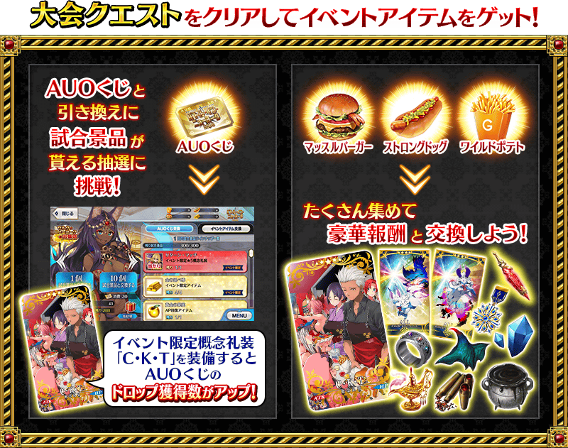
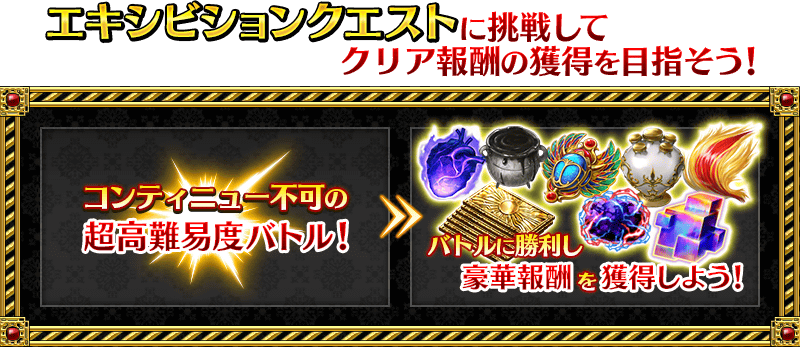
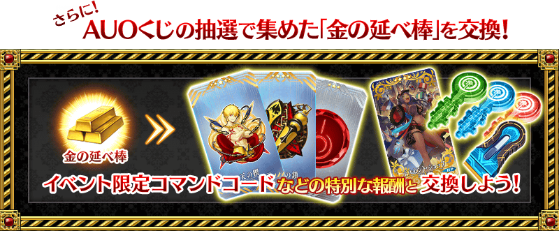
【9月19日(三) 17:00圖片修正】
調整了概念禮裝EXP卡「ドルセント・ショップ」的色調。
活動期間中會出現與複數Servant對戰的大會關卡。
大會關卡有「街頭級」「俱樂部級」「體育館級」「競技場級」「樂園級」的5階段難易度，改變各自對戰Servant和報酬等。
另外，通過行程表的進行會變化關卡種類「預選→正賽→決賽」，據此也變化關卡內容。
請注意每個關卡有各自的舉辦期間，超過後就算是活動舉辦中也無法挑戰。
◆大會關卡舉辦期間◆
| 關卡的種類 | 舉辦期間 |
|---|---|
| 預選 | 9月19日(三) 17:00～9月23日(日) 16:59 |
| 正賽 | 9月23日(日) 17:00～9月28日(五) 16:59 |
| 決賽 | 9月28日(五) 17:00～ |
※9/27(四) 12:00修正
【9月19日(三) 17:00追記】
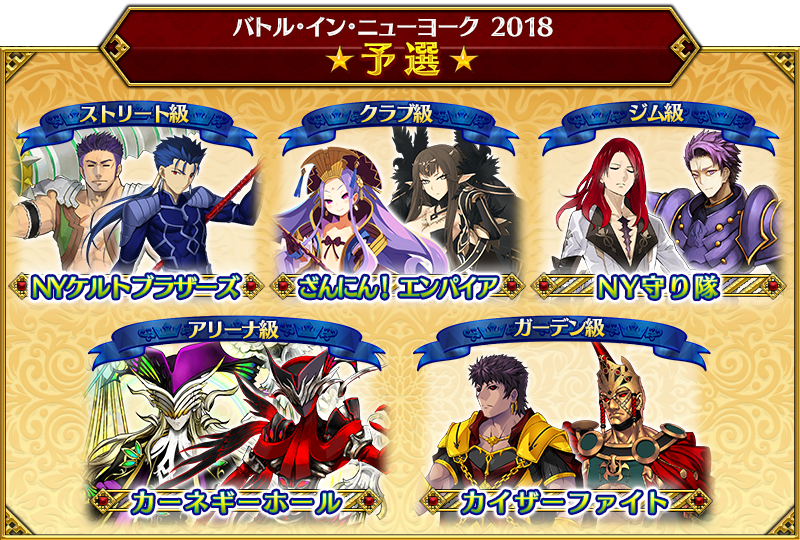
| 關卡名 | 推薦Lv. | 消耗AP |
|---|---|---|
| ストリート級 NYケルトブラザーズ | Lv.25 | AP30 |
| クラブ級 ざんにん！ エンパイア | Lv.40 | AP40 |
| ジム級 NY守り隊 | Lv.60 | AP40 |
| アリーナ級 カーネギーホール | Lv.80 | AP40 |
| ガーデン級 カイザーファイト | Lv.90 | AP40 |
【9月23日(日) 17:00追記】
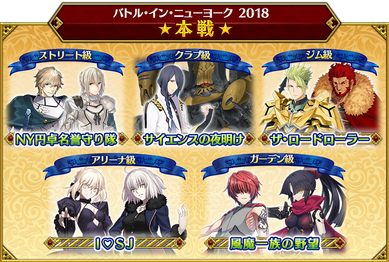
| 關卡名 | 推薦Lv. | 消耗AP |
|---|---|---|
| ストリート級 NY円卓名誉守り隊 | Lv.25 | AP30 |
| クラブ級 サイエンスの夜明け | Lv.40 | AP40 |
| ジム級 ザ･ロードローラー | Lv.60 | AP40 |
| アリーナ級 I♡SJ | Lv.80 | AP40 |
| ガーデン級 風魔一族の野望 | Lv.90 | AP40 |
【9月28日(五) 17:00追記】
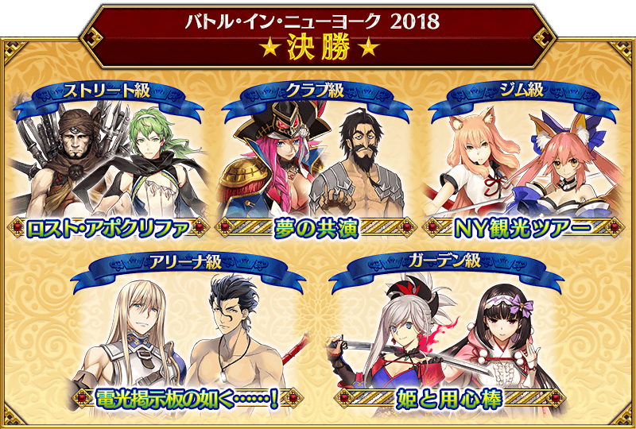
| 關卡名 | 推薦Lv. | 消耗AP |
|---|---|---|
| ストリート級 ロスト･アポクリファ | Lv.25 | AP30 |
| クラブ級 夢の共演 | Lv.40 | AP40 |
| ジム級 NY観光ツアー | Lv.60 | AP40 |
| アリーナ級 電光掲示板の如く……！ | Lv.80 | AP40 |
| ガーデン級 姫と用心棒 | Lv.90 | AP40 |
使用特殊技能等持有與平常不同攻擊類型敵人附有不可續關限制的超高難易度關卡。
通過關卡的話可獲得呼符等豪華報酬。
另外，在展演關卡有隊伍的編成限制。
進行隊伍編成時，與隊伍成員同一支援Servant存在的情況，將無法出撃。
※同名的Servant若是稀有度或職階相異、在名稱附有〔Alter〕的情況則能夠編成。
※活動期間中，關卡將逐日開放。
※展演關卡就算在通過後也不會消失，能無數次挑戰。
※關卡通過報酬、戰利品、Master經驗值、魔術禮裝經驗值、絆點數只可在初次通過時獲得。
【10月3日(三) 17:00更新】
| 關卡 | 舉辦期間 |
|---|---|
| 【超高難易度】おむすびチェーン店・一号 | 9月20日(四) 17:00～ |
| 【超高難易度】フレイム・ゲート | 9月21日(五) 17:00～ |
| 【超高難易度】摩天楼の怪人 | 9月22日(六) 17:00～ |
| 【超高難易度】おいでよジャガーの国 | 9月24日(一) |
| 【超高難易度】ドルセント・リースショップ | |
| 【超高難易度】スイーツユニヴァース | |
| 【超高難易度】フィナーレ「金色のメトロポリス」 |

|
於活動關卡收集「AUO籤」，在烏魯克・紐約出差店交換競賽獎品吧！ |
※第11次之後不會補充大獎道具及「黃金果實」「白銀果實」。
※競賽獎品中的活動専用道具「金條」，收集的話可交換活動限定指令紋章等豪華道具。
◆交換期間◆
2018年9月19日(三) 17:00～10月10日(三)10月12日(五) 11:59
※9/27(四) 12:00修正
※交換期間結束後「AUO籤」會消失。
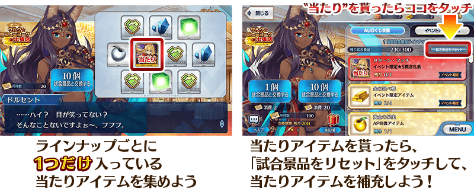
| 陣容次數 | 大獎道具 |
|---|---|
| 第1～5次 | 活動限定概念禮裝★5(SSR)「リターン・マッチ」 |
| 第6次 | 傳承結晶 |
| 第7次 | 英靈結晶・流星之芙芙ALL★4(HP) |
| 第8次 | 英靈結晶・日輪之芙芙ALL★4(ATK) |
| 第9次 | 英靈結晶・流星之芙芙ALL★4(HP) |
| 第10次 | 英靈結晶・日輪之芙芙ALL★4(ATK) |
| 第11次以後 | 無 (入手全道具才能競賽獎品重置) |
◆競賽獎品陣容◆
|
【大獎道具】 【活動道具】 【技能強化＆靈基再臨素材】 【技能強化素材】 【其他道具】 |
◆超值攻略方法・其1◆
裝備可在烏魯克・紐約出差店入手的活動限定概念禮裝「リターン・マッチ」的話，在期間限定活動「Battle in New York 2018」中會提升自身的攻擊威力。
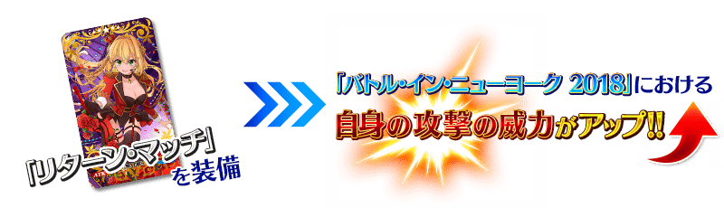
◆超值攻略方法・其2◆
裝備可在活動道具交換入手的活動限定的概念禮裝「C・K・T」的話，在期間限定活動「Battle in New York 2018」中會提升活動専用道具「AUO籤」的掉落獲得數。
※請注意各關卡的道具掉落率並非100％。
◆超值攻略方法・其3◆
裝備在聖晶石召喚Pick Up的期間限定概念禮裝「Gilgamesh in NY」「摩天楼に輝く」「ショウ・タイム」的話，在期間限定活動「Battle in New York 2018」中會提升活動専用道具「肌肉漢堡」「強健熱狗」「狂野薯條」各自的掉落獲得數。
※請注意各關卡的道具掉落率並非100％。
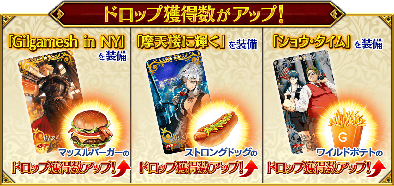

活動専用道具可自點擊管理室(ターミナル)畫面右上「活動報酬」的「活動道具交換」畫面，交換以下的道具。
※英靈結晶・流星之芙芙ALL★4(HP)、英靈結晶・日輪之芙芙ALL★4(ATK)的交換會在通過期間限定活動「Battle in New York 2018」主線關卡後開放。
◆交換期間◆
2018年9月19日(三) 17:00～10月10日(三)10月12日(五) 11:59
※9/27(四) 12:00修正
※交換期間結束後「金條」「肌肉漢堡」「強健熱狗」「狂野薯條」會消失。
◆能用金條交換的道具◆
|
【活動報酬指令コード】 【活動限定概念禮裝】 【其他道具】 |
◆能用肌肉漢堡交換的道具◆
|
【活動限定概念禮裝】 【技能強化＆靈基再臨素材】 【靈基再臨素材】 【其他道具】 |
◆能用強健熱狗交換的道具◆
|
【活動限定概念禮裝】 【技能強化＆靈基再臨素材】 【靈基再臨素材】 【其他道具】 |
◆能用狂野薯條交換的道具◆
|
【活動限定概念禮裝】 【技能強化＆靈基再臨素材】 【其他道具】 |

| 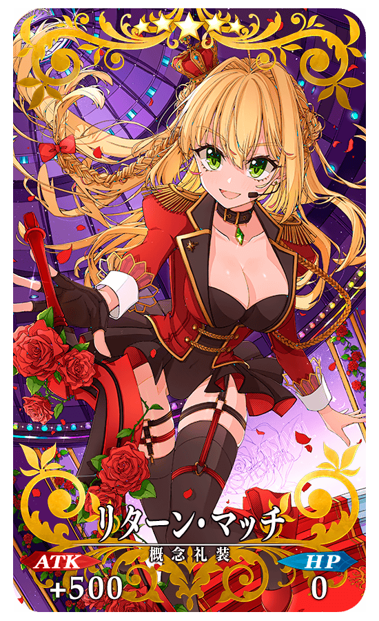 |
★★★★★SSR |
| 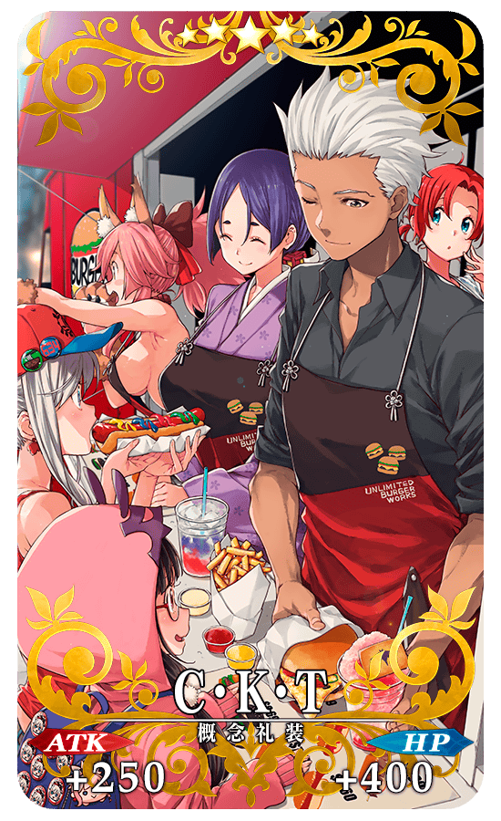 |
★★★★★SSR |
◆得到活動限定概念禮裝EXP卡「ドルセント・ショップ」吧！◆
做為活動限定的報酬，可入手能大幅強化概念禮裝大幅的EXP卡！ 【9月19日(三) 17:00圖片修正】 |
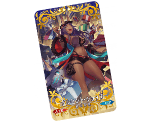 |

 |
【活動限定】 |
 |
★★★★SR |
 |
★★★R |
在隊伍編成畫面，能像「將PARTY Ⅰ的編成複製到PARTY Ⅱ」一樣，將隊伍編成複製到不同隊伍。
從編成畫面下方的選項點擊「隊伍複製」後選擇對象，將原複製的編成內容複製起來。
請注意複製前已編成好的隊伍，會被原複製的編成覆蓋。
◆追加時間◆
2018年9月19日(三) 17:00～
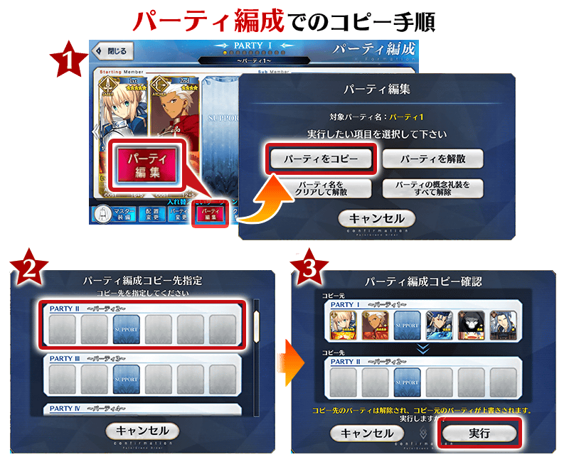
在禮物箱顯示的內容，追加以分類別顯示，可選擇非顯示篩選器。
◆追加時間◆
2018年9月19日(三) 17:00～
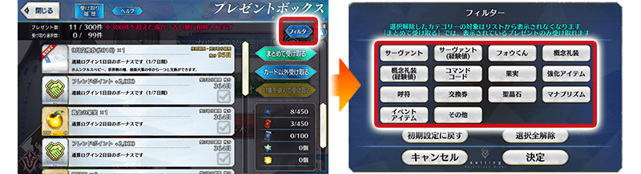
◆「Battle in New York 2018 Pick Up召喚」期間◆
期間:2018年9月19日(三) 17:00～10月3日(三)10月5日(五) 11:59
※9/27(四) 12:00修正
舉辦期間限定「Battle in New York 2018 Pick Up召喚」！
在期間限定活動「Battle in New York 2018」活躍的「★5(SSR)吉爾伽美什(Archer)」以期間限定登場！
另外「★4(SR)米德拉什的Caster」「★3(R)蓋烏斯・尤利烏斯・凱撒」Pick Up！
詳情請在聖晶石召喚畫面左下的召喚詳細確認。
做為期間限定概念禮裝「★5(SSR)Gilgamesh in NY」「★4(SR)摩天楼に輝く」「★3(R)ショウ・タイム」登場！
裝備上述3種概念禮裝的話，在期間限定活動「Battle in New York 2018」中會提升活動専用道具的掉落獲得數。
◆有關Servant的注意◆
※吉爾伽美什(Archer)在Pick Up期間結束後不會追加到故事召喚。
※米德拉什的Caster、蓋烏斯・尤利烏斯・凱撒在Pick Up期間結束後仍會自故事召喚被抽出。
※Pick Up期間中，米德拉什的Caster就算通過亞種特異點Ⅳ前也能入手。
※關於真名尚未判明的Servant，透過主線關卡的進行度會讓Servant及一部份寶具名稱變化。
◆有關概念禮裝的注意◆
※ショウ・タイム在Pick Up期間中，也能在友情點數召喚獲得。
※請注意自友情點數召喚抽出ショウ・タイム在自動變還設定登錄★3(R)概念禮裝的情況，會變成自動變還的對象。
Pick Up期間中，期間限定Servant、Pick Up Servant、期間限定概念禮裝的出現機率提升！
10次召喚中確定1張★4(SR)以上和確定1位★3(R)以上的Servant！
※確定★4(SR)以上包含Servant和概念禮裝。


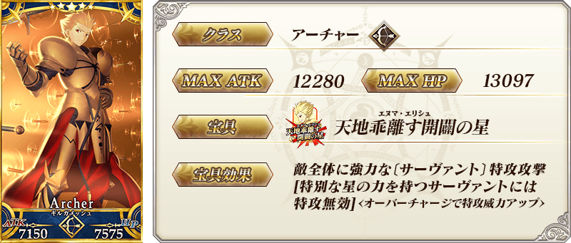
※上述「★5(SSR)吉爾伽美什(Archer)」的卡面為靈基再臨第2階段的圖片。

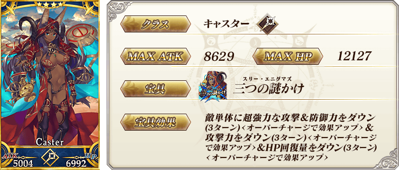
※上述「★4(SR)米德拉什的Caster」的卡面為靈基再臨第2階段的圖片。

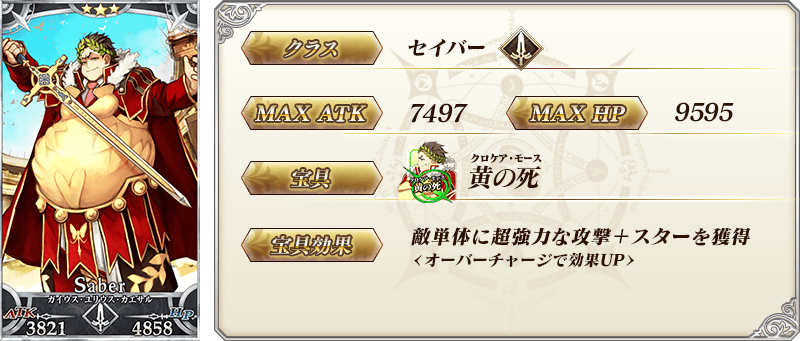
※上述「★3(R)蓋烏斯・尤利烏斯・凱撒」的卡面為靈基再臨第2階段的圖片。
| 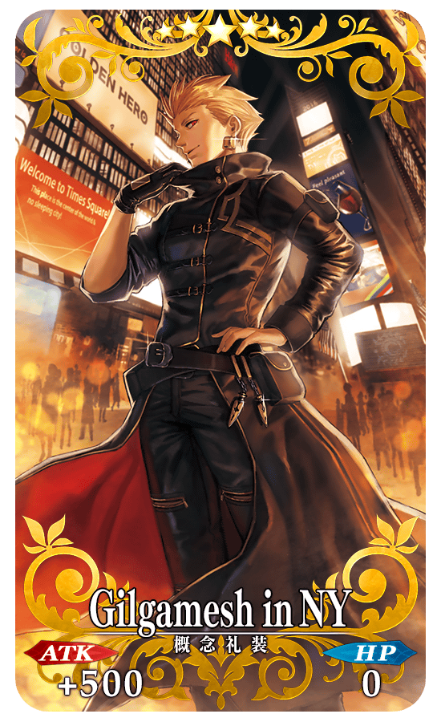 |
★★★★★SSR |
| 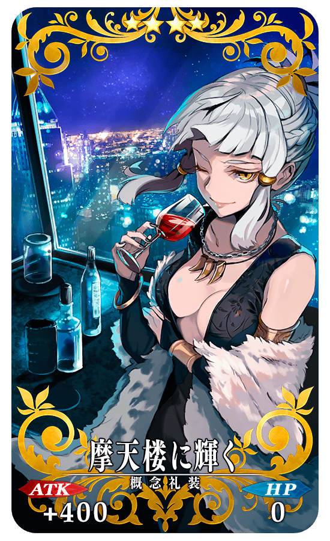 |
★★★★SR |
| 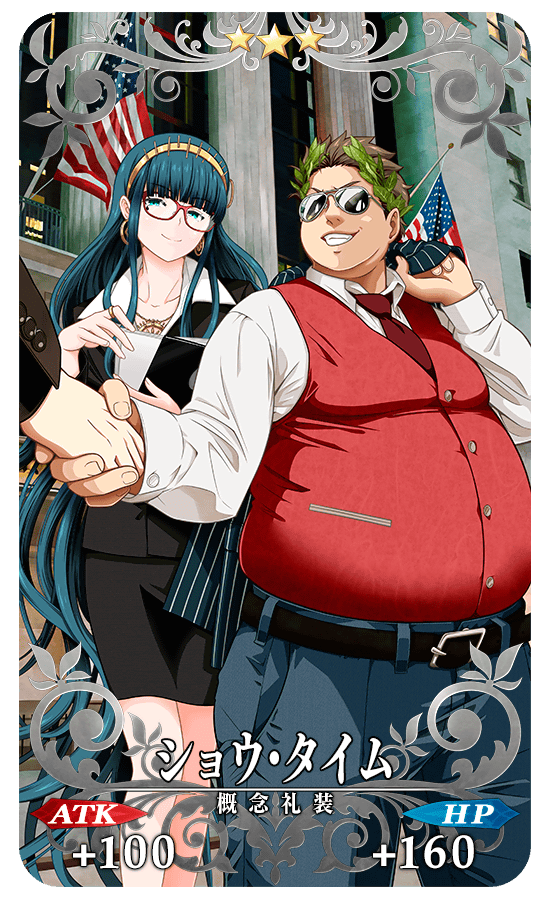 |
★★★R |
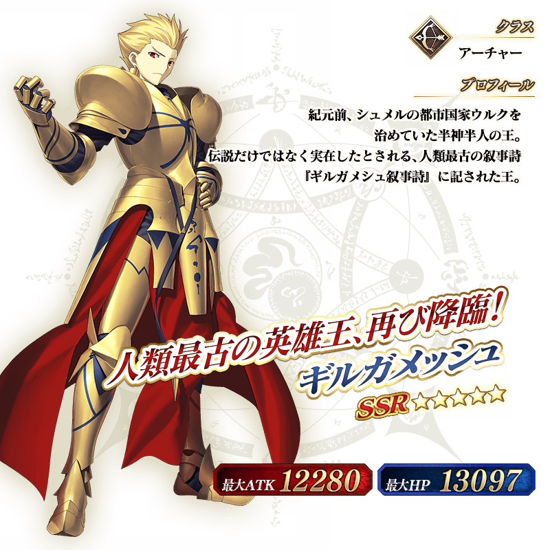
※上述「★5(SSR)吉爾伽美什(Archer)」的立繪為靈基再臨第2階段。
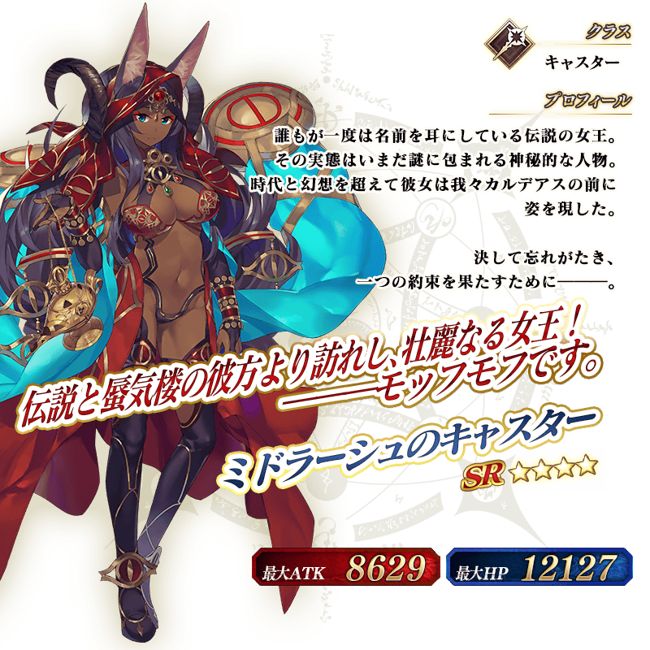
※上述「★4(SR)米德拉什的Caster」的立繪為靈基再臨第2階段。
介紹吉爾伽美什(Archer)、米德拉什的Caster的寶具演出！
在「Fate/Grand Order」官方網站內的公告中，公開了「★5(SSR)吉爾伽美什(Archer)」「★4(SR)米德拉什的Caster」的寶具演出。敬請確認。